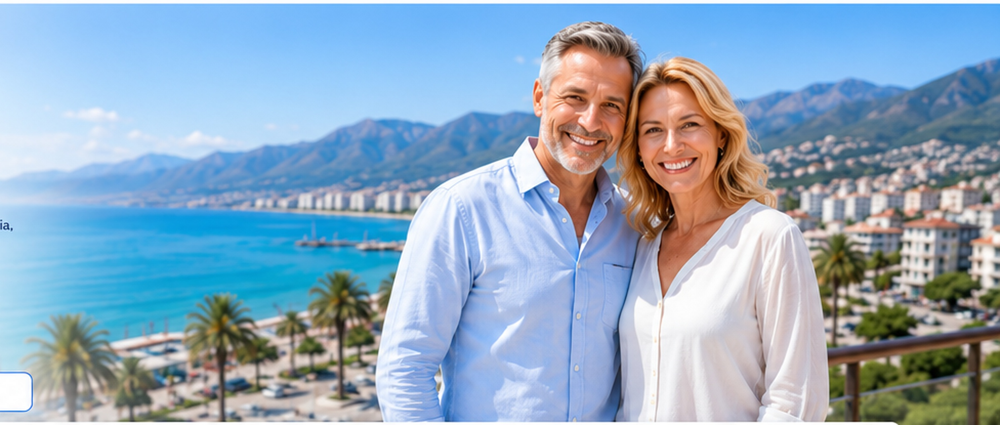
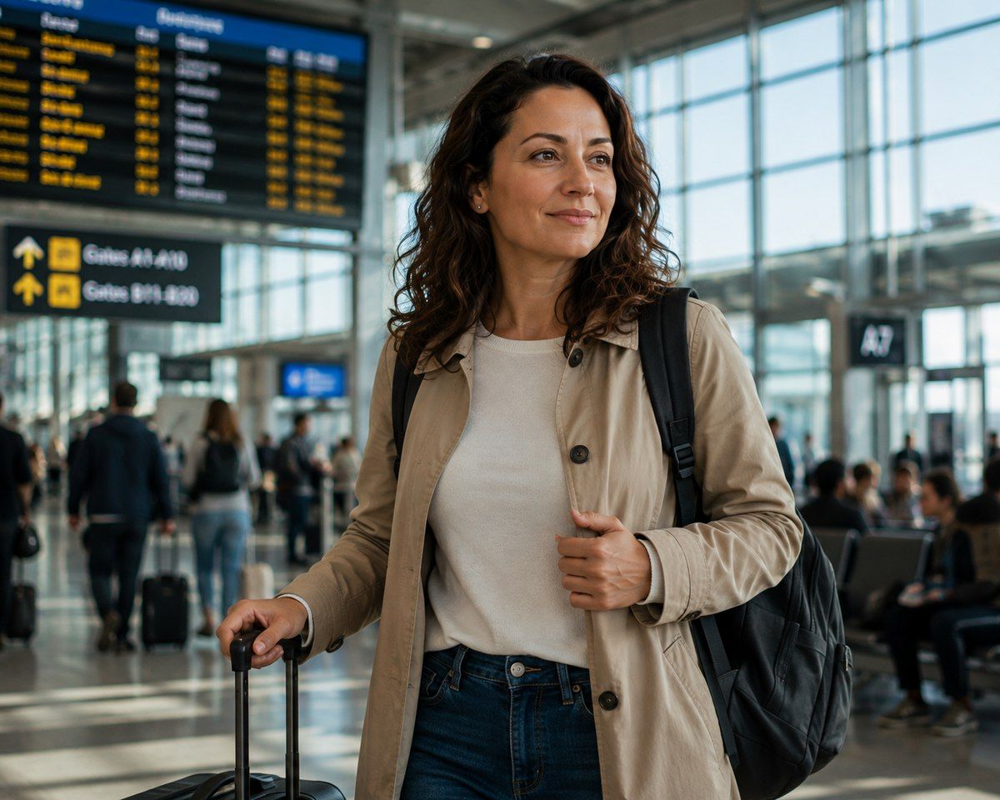
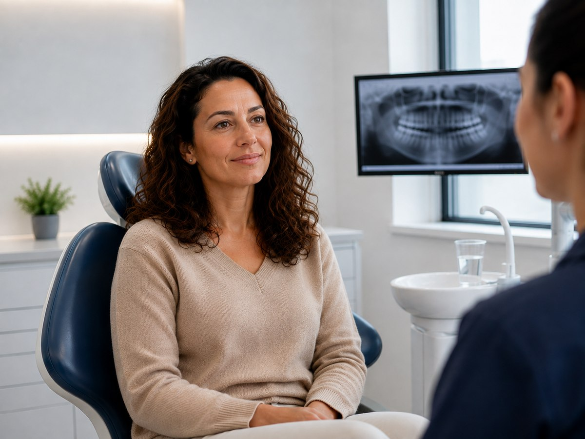
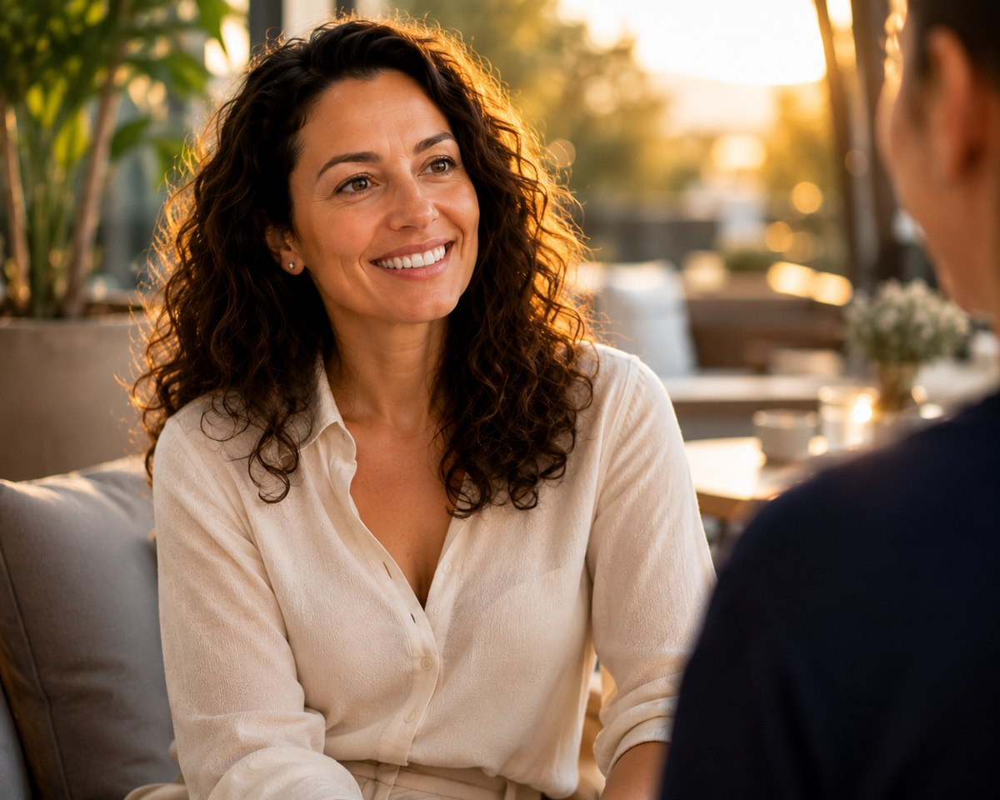

Strutture selezionate
Collaboriamo con professionisti e strutture valutate secondo criteri di qualità.

Assistenza in italiano · dal 2015
Ti aiutiamo a trovare la soluzione dentale più adatta alle tue esigenze in Albania, con assistenza in italiano durante ogni fase del percorso.
Il tuo percorso
Scorri per seguire il percorso, passo dopo passo, dalla richiesta al tuo nuovo sorriso.
Passo 1 · La richiesta
Tutto inizia con un messaggio. Da casa tua, quando ti va, ci racconti la tua situazione e cosa vorresti cambiare del tuo sorriso. Nessun impegno, nessuna fretta — solo il primo passo verso qualcosa che rimandavi da tempo.
Passo 2 · La risposta
Un nostro specialista ti richiama entro 24 ore per una consulenza telefonica gratuita. Guardiamo insieme la tua situazione, rispondiamo a ogni dubbio e costruiamo un piano su misura, con tempi e costi chiari fin da subito — tutto in italiano.
Passo 3 · Il viaggio
Organizziamo noi il tuo viaggio in Albania: dal volo al trasferimento fino in clinica, dall'alloggio all'assistenza in aeroporto. Tu pensa solo a partire, al resto pensiamo noi.
Passo 4 · La cura
In clinica ti aspetta un team che parla la tua lingua e uno staff medico con anni di esperienza internazionale. Ogni fase del trattamento viene seguita con la massima cura, con tecnologie all'avanguardia e la massima trasparenza su ogni passaggio.
Passo 5 · Il risultato
Torni a casa con il sorriso che desideravi da anni — e con la sicurezza di aver scelto un percorso serio, seguito passo dopo passo. Il cambiamento non è solo estetico: è la fiducia che ritrovi ogni volta che sorridi.
Tutto inizia con un messaggio. Da casa tua, quando ti va, ci racconti la tua situazione e cosa vorresti cambiare del tuo sorriso. Nessun impegno, nessuna fretta — solo il primo passo verso qualcosa che rimandavi da tempo.
Un nostro specialista ti richiama entro 24 ore per una consulenza telefonica gratuita. Guardiamo insieme la tua situazione, rispondiamo a ogni dubbio e costruiamo un piano su misura, con tempi e costi chiari fin da subito — tutto in italiano.

Organizziamo noi il tuo viaggio in Albania: dal volo al trasferimento fino in clinica, dall'alloggio all'assistenza in aeroporto. Tu pensa solo a partire, al resto pensiamo noi.

In clinica ti aspetta un team che parla la tua lingua e uno staff medico con anni di esperienza internazionale. Ogni fase del trattamento viene seguita con la massima cura, con tecnologie all'avanguardia e la massima trasparenza su ogni passaggio.

Torni a casa con il sorriso che desideravi da anni — e con la sicurezza di aver scelto un percorso serio, seguito passo dopo passo. Il cambiamento non è solo estetico: è la fiducia che ritrovi ogni volta che sorridi.
La valutazione definitiva e il piano clinico possono essere confermati solo dopo la visita del professionista sanitario.
Soluzioni personalizzate
Ti aiutiamo a individuare la soluzione più adatta alle tue necessità.
Soluzioni implantari valutate in base al singolo caso.
Richiedi informazioni →Ripristino della funzionalità e dell’estetica del sorriso.
Richiedi informazioni →Percorsi estetici personalizzati e pianificati con attenzione.
Richiedi informazioni →Soluzioni coordinate per esigenze più complesse.
Richiedi informazioni →Protesi fisse o mobili realizzate su misura.
Richiedi informazioni →Prevenzione e trattamenti per valorizzare il sorriso.
Richiedi informazioni →Trasparenza
Esempi indicativi di costi medi confrontati tra Italia e Albania.
| Trattamento | Italia | Albania | Risparmio indicativo |
|---|---|---|---|
| Impianto completo con corona | € 1.200–4.000 | € 600–800 | 50–80% |
| Corona in zirconio | € 800–1.500 | € 150–250 | 70–90% |
| Faccetta dentale | € 500–1.500 | € 250–300 | 40–80% |
| All-on-4 per arcata | € 7.500–11.500 | € 4.900–5.800 | 25–55% |
| Igiene professionale | € 50–150 | € 30–50 | 20–65% |
Fasce indicative ricavate da listini pubblici. Il costo reale dipende dal caso clinico, dai materiali e dalla struttura.
Risultati reali
Una selezione di casi seguiti dal nostro team, condivisi con il consenso dei pazienti.
Dalla fase chirurgica al sorriso finale, su entrambe le arcate.
Forma e colore naturali, pensati per il viso del paziente.
Lo spazio tra gli incisivi chiuso con un risultato armonico.
Sorriso rinnovato in poche sedute.
Denti fratturati e compromessi sostituiti con un’arcata fissa.
Verifica del corretto posizionamento degli impianti su entrambe le arcate.
Un sorriso più luminoso e uniforme.
Denti scheggiati e spaziati trasformati in un sorriso naturale.
Denti anteriori compromessi ricostruiti con un risultato naturale.
Parola ai pazienti
Testimonianze raccolte dai pazienti che hanno completato il percorso con noi.
Avevo perso la fiducia nel mio sorriso dopo anni di problemi. Ho trovato uno staff che mi ha seguito passo dopo passo, spiegandomi tutto in italiano. Oggi mangio e sorrido senza pensarci due volte.
Volevo un sorriso più naturale senza esagerare. Il risultato è esattamente quello che avevo in mente — e il viaggio è stato molto più semplice di quanto immaginassi.
Avevo quello spazio tra i denti fin da bambino. In due viaggi è sparito. Non mi aspettavo un cambiamento così naturale.
Professionalità e attenzione ai dettagli, dalla prima videochiamata fino all'ultimo controllo. Consiglierei l'esperienza a chiunque abbia dubbi sul viaggio.
Un percorso lungo ma seguito con grande cura. Mi hanno aggiornato ad ogni fase, anche da casa. Il risultato finale ha superato le aspettative.
Avevo rimandato per anni per paura del costo e del tempo necessario. Alla fine il percorso è stato più veloce di quanto pensassi, e il team mi ha messo a mio agio fin dalla prima visita.
Una scelta pratica
Collegamenti frequenti e tempi di viaggio ridotti.
Comunicazione semplice con un referente dedicato.
Possibilità di costi più contenuti, in base al caso.
Supporto per appuntamenti, trasferimenti e soggiorno.
Supporto completo
Siamo un servizio di intermediazione e assistenza. Non effettuiamo diagnosi, non prescriviamo trattamenti e non sostituiamo il parere di un odontoiatra qualificato.
Chiarezza
Sì. Affidandosi a cliniche qualificate e con una lunga esperienza, sottoporsi a trattamenti dentali in Albania è una scelta sicura e ormai consolidata. Collaboriamo con strutture selezionate che vantano fino a 20 anni di esperienza nel settore odontoiatrico, con professionisti qualificati, tecnologie moderne e protocolli rigorosi di igiene e sicurezza. Il turismo dentale in Albania è una realtà consolidata da oltre 10 anni: ogni anno migliaia di pazienti italiani scelgono il Paese per effettuare cure odontoiatriche, dagli interventi più semplici fino a trattamenti complessi di implantologia e riabilitazione dentale. La nostra priorità è accompagnare ogni paziente verso strutture affidabili e professionisti esperti, affinché possa affrontare il proprio percorso di cura con serenità, sicurezza e assistenza in ogni fase del trattamento.
La durata dipende dal trattamento. Alcuni interventi richiedono pochi giorni, altri più viaggi.
Sì, il preventivo è 100% gratuito e senza alcun impegno. Potrai ricevere una prima valutazione del tuo caso e un preventivo personalizzato senza sostenere alcun costo. Anche il supporto del nostro consulente durante questa fase è completamente gratuito: potrai ricevere tutte le informazioni necessarie, chiarire i tuoi dubbi e valutare con tranquillità la soluzione più adatta alle tue esigenze.
Sì, certamente. Puoi inviare la tua panoramica dentale in modo semplice e veloce, allegandola direttamente al form sottostante oppure inviandola tramite WhatsApp al numero indicato in questa pagina. La panoramica dentale è uno degli elementi più importanti per effettuare una prima valutazione accurata del tuo caso. Permette ai nostri specialisti di analizzare la situazione dentale, individuare le possibili necessità di trattamento e preparare un piano di cura personalizzato. Inoltre, avere una panoramica recente consente di elaborare un preventivo molto più preciso e dettagliato, basato sulle reali esigenze del paziente e sul trattamento necessario. Se disponi già di una panoramica dentale, ti consigliamo quindi di allegarla alla richiesta: ci aiuterà a fornirti una valutazione più completa fin dal primo contatto.
Sì, ci occupiamo noi dell’organizzazione del tuo viaggio in ogni dettaglio, così potrai concentrarti esclusivamente sul tuo percorso di cura. Il nostro team ti assisterà nell’organizzazione del viaggio, dell’alloggio, dei trasferimenti e di tutti gli aspetti logistici necessari per il tuo soggiorno in Albania, coordinando il tutto con gli appuntamenti e il piano di cura previsto dalla clinica. Dal momento della partenza fino al termine del trattamento, avrai un punto di riferimento dedicato che ti accompagnerà e ti assisterà durante tutto il percorso. Tu pensa al tuo sorriso, al resto pensiamo noi.
Sì. Le cliniche con cui collaboriamo offrono garanzie sui trattamenti eseguiti, secondo le condizioni previste per ciascuna tipologia di intervento. Collaboriamo esclusivamente con strutture selezionate che utilizzano materiali di alta qualità, certificati e provenienti da produttori affidabili, insieme a tecnologie moderne e protocolli professionali. La qualità del trattamento e la tranquillità del paziente sono per noi fondamentali. Per questo, prima di iniziare il percorso di cura, riceverai tutte le informazioni relative al trattamento, ai materiali utilizzati e alle garanzie previste, in modo chiaro e trasparente. Il nostro obiettivo non è soltanto offrirti un nuovo sorriso, ma garantirti qualità, sicurezza e assistenza anche dopo il trattamento.
Il costo delle cure dentali in Albania varia in base al trattamento, alla complessità del caso, ai materiali utilizzati e alla struttura selezionata. Dopo una prima valutazione della documentazione disponibile, è possibile ricevere un preventivo personalizzato e senza impegno. Sorriso Albania ti assiste nella richiesta e nella comprensione del preventivo prima di organizzare il viaggio.
Contatto rapido
Compila il modulo. Ti ricontatteremo per comprendere le tue esigenze.